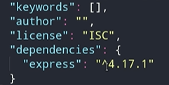

Node Package Manager
No decorrer do artigo já falamos de algumas características do Node.js, mas vale ressaltar que ele pode ser
usado para:
Desenvolver soluções em API Rest;
Criação de chatbots;
Projetos de internet das coisas (IoT); e
Dar vida a soluções de web scraping, web servers e até mesmo aplicações desktop.
O Node.js possui uma versatilidade gigantesca e Camila Pessôa, em seu artigo sobre como o Node.js funciona,
elenca algumas outras características que não podemos deixar de comentar:
1- Escalabilidade: o Node.js foi pensando desde o ínicio para entregar soluções para arquiteturas
escaláveis,
por isso sua adoção por grandes empresas de tecnologias;
2-
Multiplataforma: podemos criar desde soluções web a aplicações desktop;
3-
Open Source: como já citado, o Node.js tem seu código aberto, o que nos possibilita contribuir com o
projeto
e até mesmo realizar customizações;
4- Multi-paradigma:
com o JavaScript podemos adotar várias formas de codificar usando paradigmas como a
orientação a objetos, o funcional e o orientado a eventos.
Para se trabalhar com o Node.js é preciso conhecer as bases do JavaScript, que é uma linguagem com grande
receptividade, principalmente para os iniciantes, pois possui uma curva de aprendizagem mais suave em
comparação a outras linguagens.
O Node.js trabalha fortemente com o conceito de módulo, que visa organizar o código em
partes pequenas e
especializadas, além de aplicar o princípio de encapsulamento ao “esconder” o código e expor somente o
necessário a outras partes da aplicação.
Originalmente o Node.js trabalhava com o sistema CJS (Common JS) de modularização, pois o JavaScript não
tinha ferramentas específicas para isso. Posteriormente foi especificado o padrão “geral” de módulos do
JavaScript, o EcmaScript Modules.
O Node.js vem adotando gradativamente o ECMAScript Modules desde a versão 13, o que traz muitas diferenças
com relação à forma “original” do Node.js, o CJS. Para saber mais sobre esse tema, recomendamos a leitura do
artigo Um guia para importação e exportação de módulos com JavaScript.
Como vimos anteriormente em aulas passadas aq segue como se instala o npm:
//no terminal, encontre o local onde sera iniciado o npm(instalado)
npm init -y (desta forma instalara sem as fomalidades'como nomear as coisas dentro')
Aqui sera gerado um arquivo package.json, e quando precisar poderá editalo diacordo seu
gosto.
Instalando aplicações de terceiros
//neste exemplo esta sendo instalado o Express
npm install express
Após a instalação o package.json, tera essas configurações.

O
^ que esta na frente da versao, indica q ele pode atualizar
automaticamente
E se caso queira somente a versao atual, e nao queira q seja atualizado para versoes recentes, é so instalar
assim:
npm install express -E assim sera retirado o
^
Instalando de forma manual as atualizações
npm update
Movendo uma aplicação para dev dependencies
Para que ele seja usado somente no desenvolvimento do projeto e nao no projeto em si